Germany album: the 7 picks build_scene_distance changed
13 of 20 picks identical (minimal pipeline). Scenes 97/167 noise
→ 99/156 noise. red = baseline,
green = fused. Is each green as good or better?
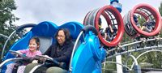
OUT: 20240819_142837→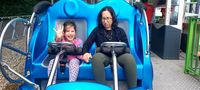
IN: 20240819_142830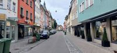
OUT: 20240819_190337→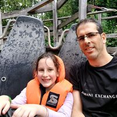
IN: 20240819_155906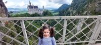
OUT: 20240821_172756→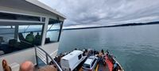
IN: 20240820_114503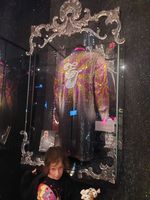
OUT: 20240826_171348→IN: 20240820_114640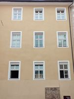
OUT: IMG_20240826_113449→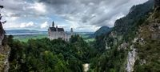
IN: 20240821_172835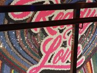
OUT: IMG_20240826_171232→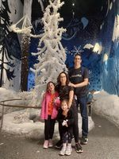
IN: 20240826_170316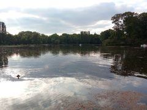
OUT: IMG_20240827_182659→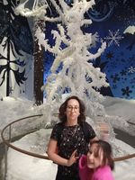
IN: IMG_20240826_165951